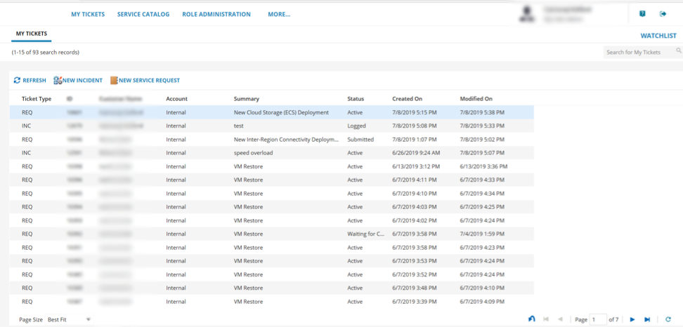
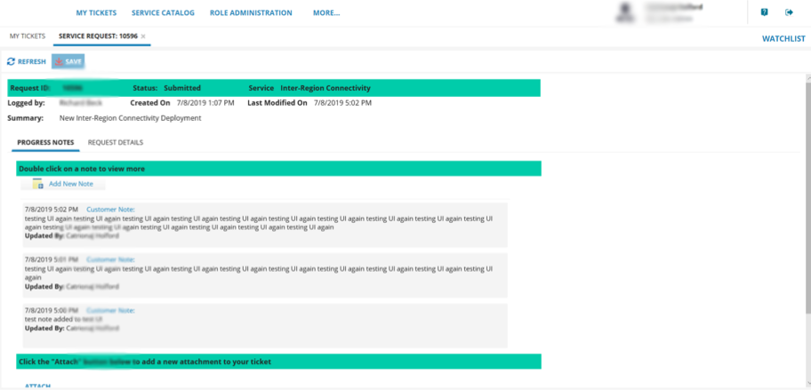
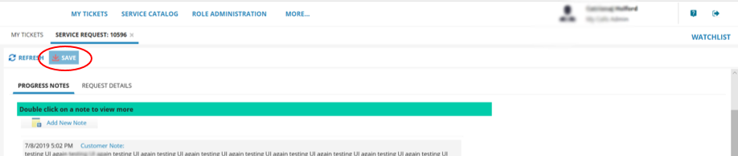

How to use My Calls to raise and monitor support tickets
Overview
My Calls is your one‑stop place, accessed via the UKCloud Portal, to raise new support tickets (incidents and requests) with UKCloud and monitor existing tickets.
My Calls covers the ITIL standards of:
Raising faults and outages (incidents)
Raising service requests, for example, to request service or system information, restore backups or request logs
Intended audience
This article is intended for any UKCloud Portal user who wants to use My Calls to raise or monitor support tickets. To complete the steps in this article, you must be able to log in to the UKCloud Portal with the following My Calls permissions:
If you have the My Tickets permission, you can create new support tickets and view and update the tickets that you've created
If you have the Account Tickets or My Calls Admin permission, you can create new support tickets and view and update any ticket raised (including those raised by other users)
Accessing My Calls
Log in to the UKCloud Portal.
For more detailed instructions, see the Getting Started Guide for the UKCloud Portal.
In the Portal navigation panel, expand the Support option and select My Calls.

Click Go to My Calls Portal.
For additional security, re-enter your UKCloud Portal user credentials to access My Calls.

If two-factor authentication (2FA) has been enabled for your account, you'll be prompted to enter a six digit code. Use your 2FA app to generate the code and enter it here.
The My Calls home page shows a simple view of all tickets that have been raised.

My Tickets lists the support tickets (incidents and service requests) that you can view, depending on your permissions. These are listed with the newest first. You can use the search tool to find a specific ticket and use filter options to find tickets with a particular status or date.
You can raise new tickets using the New Incident and New Service Request buttons.
Select the Service Catalog tab to find incident and service request templates to raise tickets.
Raising a support ticket
If you want to request a new service or make changes to an existing service, raise a service request ticket
If you want to report a fault or outage, raise an incident
Note
Before reporting an incident, check the UKCloud Service Status page to see if it's a known issue that we're already working on.
Raising a service request ticket
In My Calls, select the Service Catalog tab.

Search the Service Catalog for the type of request you want to raise. You can browse by product type or most popular, or enter keywords to search for.

Select the service request template that you want to use.

Complete the fields in the form with as much information as possible, including any mandatory fields, which are marked with a red asterisk. This is so that our Support Team can address your ticket promptly.

When you're done, click Review & Submit. You can then edit the information in your request or submit it.

Note
You're automatically subscribed to any tickets that you create.
Raising an incident ticket
Note
Before reporting an incident, check the UKCloud Service Status page to see if it's a known issue that we're already working on.
In My Calls, select the Service Catalog tab.
Search the Service Catalog for the type of incident you need to raise. You can browse by product type or most popular or enter keywords to search for.
Select the incident template that you want to use (for example, VMWare Incident).

Complete the fields in the form with as much information as possible, including any mandatory fields, which are marked with a red asterisk. This is so that our Support Team can address your ticket promptly.

When you're done, click Save Incident

Note
You're automatically subscribed to any tickets that you create.
Accessing an existing support ticket
After raising a support ticket, you can view the ticket to monitor progress, add more information, add attachments, close or cancel the ticket.
Note
The actions you can perform on a ticket depend on your support permissions. You'll always be able to update support tickets that you have raised. If you have the Account Tickets or My Calls Admin permissions, you can also view and edit tickets raised by other users on the account.
In My Calls, on the My Tickets tab, find the ticket you want to view by:
Browsing through the list of tickets. By default, tickets are listed with the newest first.
Use the search field to find your ticket.
Use filter options to find tickets with a particular status or date. You can also filter by incident and request ticket types.
Updating an existing service request ticket
When you find your service request ticket, double click to open it.
The top of the request details who logged the ticket, ticket status, the service that is being requested, a summary of the request, when it was raised and when it was last modified.

The Progress Notes tab contains the following information:
Add New Note enables you to provide additional information relating to your request and respond to any questions from our engineers.

In the Notes History, you can also read updates on your requests from our engineers. Double-click to open an update. You can see who provided the update and the date it was provided.
Click Attach to attach documents to your service request. Any documents you attach will be listed in the ticket. For security purposes some file attachments formats are not accepted.
The Request Details tab contains details of the request that was submitted.

When you're done, click Save.

Monitoring an existing incident ticket
When you find your incident ticket, double click to open it.
The top of the incident details who logged the ticket, the ticket status, the service that the incident was logged against, a description of the incident, when it was raised and last modified and any resolution.

The Progress Notes tab contains the following information:
Add New Note enables you to provide additional information relating to the incident and respond to any questions from our engineers.

In the Notes History, you can also read updates on the incident from our engineers. Double-click to open an update. You can see who provided the update and the date it was provided.
Click Attach to attach documents to the incident. Any documents you attach will be listed in the ticket. For security purposes, some file attachment formats are not accepted.

Click Close Incident to close an incident. You'll be promoted to add a reason for closure. When you're done click OK.
If you need to re-open an incident that has been closed, click Re-open Incident. You'll be prompted for a reason for re-opening the incident. When you're done click OK.

When you're done, click Save.
Providing feedback
We value your feedback on your UKCloud customer support experience to help us understand what we're doing right and how we could improve. For each ticket you raise, you have the opportunity to fill in a brief survey to tell us what you think.
To access the survey:
For service requests tickets - Edit the ticket and select the Customer Satisfaction Survey tab then click Complete new survey.

For incident tickets - Edit the ticket and in the Survey section at the bottom of the page, click Complete new survey.

Answer the questions in the survey and when you're done, click Save.

Next steps
For more information about the UKCloud support process, see How to raise and escalate incidents and service requests
For information about how administrators can give Portal users access to My Calls, see How to manage My Calls users
For information about what else you can do in the UKCloud Portal, see the Getting Started Guide for the UKCloud Portal
Related videos
Feedback
If you find an issue with this article, click Improve this Doc to suggest a change. If you have an idea for how we could improve any of our services, visit the Ideas section of the UKCloud Community.